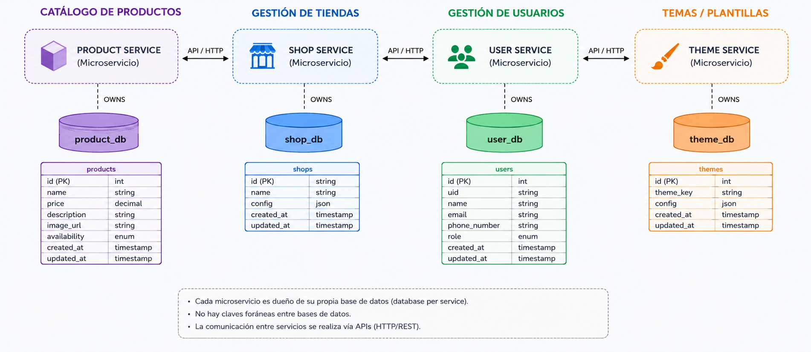

CloudFormation
Declara API Gateway, VPC Link, ALB interno, instancias EC2, Security Groups, buckets S3 y Amplify para mantener el despliegue versionado.
Infrastructure
Esta página muestra el modelo entidad-relación, la arquitectura de solución propuesta en AWS y los atributos principales que maneja cada base de datos del sistema.


Declara API Gateway, VPC Link, ALB interno, instancias EC2, Security Groups, buckets S3 y Amplify para mantener el despliegue versionado.
Los cinco microservicios corren en dos EC2 de aplicación detrás de un ALB interno. La entrada pública HTTPS es API Gateway, conectado al balanceador mediante VPC Link.
Almacena imágenes de productos y los archivos CSV/JSON generados por la ingesta.
Glue cataloga los archivos de ingesta y Athena los consulta desde data-analyst-service sin acceder directamente a las bases operativas.
Publica el frontend desde la carpeta frontend/ del repositorio y automatiza el build y deploy desde la rama configurada sin infraestructura adicional.
| Servicio | Entidad / Colección | Atributos principales |
|---|---|---|
| user-service | users |
id, name, email, phone_number, role, subscription, shop_id, password, enabled, token_version, created_at |
| shop-service | Shop |
id, name, owner_id, phone_number |
| shop-service | Membership |
id, user_id, role, shop_id |
| shop-service | ShopTheme |
id, shopId, themeKey, config, createdAt, updatedAt |
| product-service | products |
_id, name, price, description, imageUrl, availability, shopId, createdAt |
Un OWNER puede tener una o varias tiendas. Cada tienda mantiene su owner_id, y la entidad Membership enlaza usuarios CLIENT con una shop concreta asignándoles un rol.
Cada producto pertenece a una sola tienda a través de shopId. Eso permite escalar catálogos independientes por shop sin mezclar inventario ni romper el aislamiento de dominios.